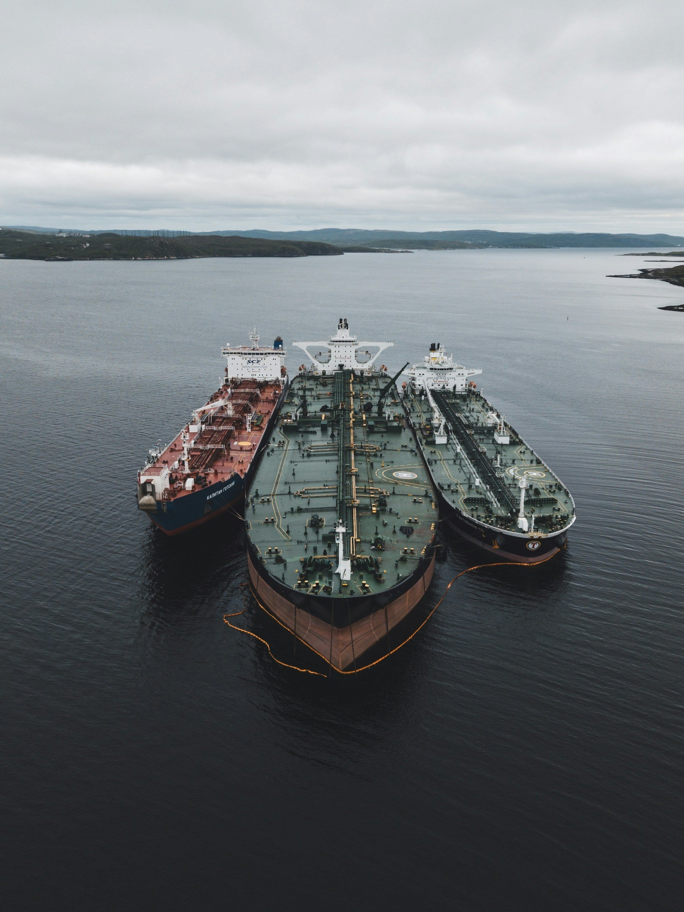

ByEirini Diamantara&Dimitris Roumeliotis
Tanker fleet growth has accelerated considerably over the past two years, marking a clear shift from the unusually restrained supply environment that supported the market earlier in the cycle. Across the main tanker segments, combined fleet capacity has increased from approximately 677.8 mills DWT at the end of 2023 to around 738.9 mills DWT currently, representing growth of roughly 9.0%. However, the expansion has been far from uniform. Small tankers, MR2s and Aframax/LR2s have recorded the strongest capacity growth since end-2023, increasing by approximately 15.3%, 13.8% and 14.3%, respectively. By contrast, VLCC/ULCC capacity has expanded by only around 4.2%, while Handy/MR1 growth has remained similarly limited.
The pace of additions has nevertheless changed sharply. Deliveries across the tanker fleet totalled only around 7.6 mills DWT in 2024 before rising to approximately 19.5 mills DWT in 2025. During 2026 to date, around 32.6 mills DWT has already entered the fleet, highlighting the extent to which the newbuilding cycle has begun translating into physical supply. MR2 and Aframax/LR2 deliveries have been particularly substantial, while the larger crude tanker segments are now also seeing a notable increase. VLCC/ULCC deliveries, for example, have risen from just one vessel in 2024 and six in 2025 to 31 vessels during 2026 so far. More importantly, the delivery pipeline remains heavy beyond the current year. The tanker orderbook has expanded substantially across almost every segment compared with end-2023. The most pronounced exposure is now concentrated among the larger crude carriers: the current Suezmax orderbook stands at approximately 29.6% of the existing fleet in DWT terms, while VLCC/ULCC has climbed to around 32.5%. Aframax/LR2 and MR2 orderbooks are also significant at approximately 20.7% and 19.7%, respectively. This represents a very different supply backdrop from only a few years ago, particularly for VLCCs, where limited ordering had previously kept forward fleet growth exceptionally low. Scheduled 2027 deliveries amount to approximately 50.7 mills DWT, equivalent to almost 6.9% of the current tanker fleet. The delivery profile becomes heavier again in 2028, with around 61.2 mills DWT currently scheduled, while a further 67.5 mills DWT sits in the 2029-and-beyond pipeline. On headline numbers alone, this creates clear supply-side pressure, raises the importance of demand growth, slippage and recycling in determining how much of this capacity ultimately translates into effective fleet expansion.
The age profile offers an important counterbalance. Around 19.8% of the current tanker fleet by vessel count is already more than 20 years old, while almost half is above 15 years. The replacement requirement is particularly pronounced in Handy/MR1 and Panamax/LR1, where approximately 37.3% and 22.6% of vessels, respectively, are over 20 years old. Even within the larger crude tanker segments, close to one-fifth of Aframax/LR2 and VLCC/ULCC vessels are already above the 20-year threshold. A heavier delivery program could therefore coincide with greater recycling and replacement of ageing tonnage rather than translate entirely into incremental effective supply. Demand growth, however, appears comparatively limited on the current forecasts. Total seaborne oil trade is projected at around 62.8m bpd in 2027, slightly below the 63.4m bpd recorded in 2025. Within that, crude oil trade is expected to edge higher to approximately 40.7m bpd, while oil products remain below 2025 levels. As a result, simple volume growth may not be sufficient to absorb the incoming fleet.
The tanker market is therefore moving into a more supply-sensitive phase. The key question for 2027 and beyond will not simply be how many vessels are delivered, but how effectively ageing tonnage exits the trading fleet and how geopolitical developments, trade dislocations and changing sourcing patterns affect tonne-mile demand. With a significantly larger orderbook now approaching delivery, vessel utilization and trade distances will become increasingly important in determining whether headline fleet growth translates into genuine oversupply.
Data source:Xclusiv Shipbrokers Inc.